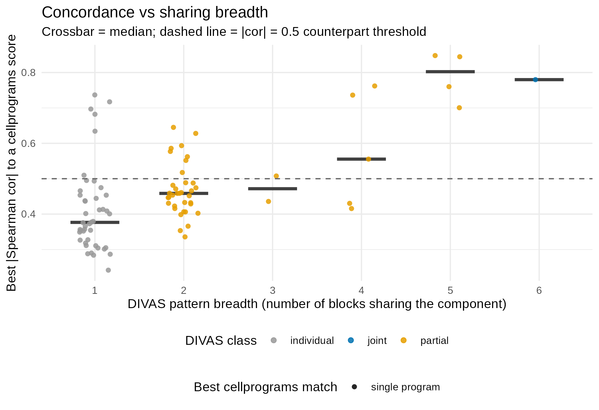
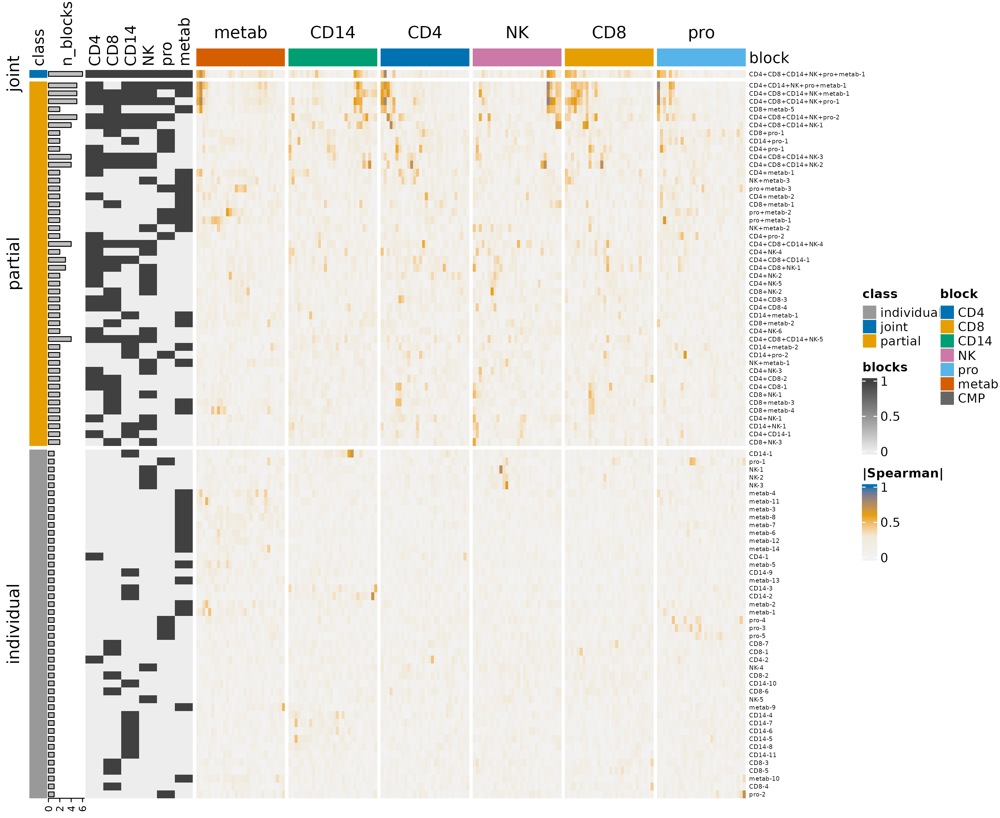
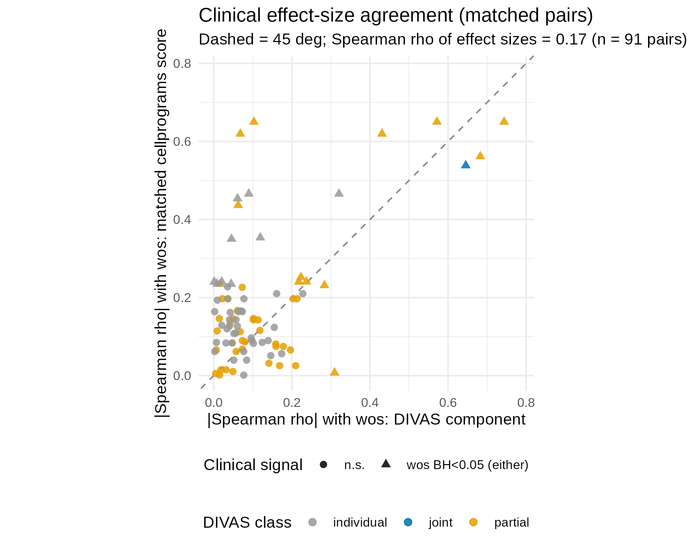

Case study: DIVAS COVID-19 multi-omics reanalysis with cellprograms
divas_case_study.RmdThis article reanalyses the DIVAS COVID-19 case study (https://github.com/ByronSyun/DIVAS_COVID19_CaseStudy)
with cellprograms and compares the two pipelines’ outputs
program by program. DIVAS jointly decomposes 6 data blocks (4 scRNA-seq
cell types + proteomics + metabolomics) into components tagged by which
blocks they span; the cellprograms workflow fits each block separately,
then recovers cross-block structure with coordination (CMPs) and
cross-cell-type sharing. All numbers and figures are precomputed; the
code chunks show exactly how each result was produced. The full scripts
live in benchmarks/divas_comparison/scripts/ in the package
repository.
Data
114 samples (85 patients: 29 with paired T1/T2 samples, 56 with a
single timepoint), 40 mild / 40 moderate / 34 severe COVID-19, outcome =
WHO ordinal score (wos). Six blocks: CD4 T, CD8 T, CD14
monocytes, and NK gene blocks (8,634 shared genes each), proteomics (481
proteins), and metabolomics (763 metabolites).
DIVAS was run by the original authors
(DIVASmain(nsim = 500, colCent = FALSE, rowCent = TRUE, seed = 123));
its precomputed results (Zenodo record 17430294) yield 91 components: 44
individual (1 block), 46 partial (2-5 blocks), 1 joint (all 6
blocks).
Fitting at DIVAS parity
# each block CSV: features x samples -> transpose to samples x features
read_block <- function(path) {
t(as.matrix(read.csv(path, row.names = 1, check.names = FALSE)))
}
blocks <- c("CD4", "CD8", "CD14", "NK", "proteomics", "metabolomics")
pseudobulk <- lapply(blocks, function(b)
read_block(file.path(data_dir, "input", paste0("Combined_", b, ".csv"))))
names(pseudobulk) <- c("CD4_T", "CD8_T", "CD14_Monocyte", "NK",
"proteomics", "metabolomics")
x <- as_cell_program_data(pseudobulk, sample_metadata = sample_metadata)
fit <- fit_celltype_programs(x, loading_prior = "point_laplace",
max_factors = 30, center = TRUE, scale = FALSE,
var_type = 1, backfit = TRUE, nullcheck = TRUE,
seed = 1)
fit <- canonicalize_programs(fit)All 6 blocks retain K = 30 programs (180 scores total).
Coordination and sharing
cmp <- find_coordinated_programs(fit, n_perm = 999, seed = 1, min_donors = 20)
cmp_within <- find_coordinated_programs(fit, mode = "within",
context = "severity",
n_perm = 999, seed = 1)
gene_fit <- fit; gene_fit$cell_types <- c("CD4_T", "CD8_T", "CD14_Monocyte", "NK")
sharing <- program_sharing(gene_fit, n_perm = 199, seed = 1, z_thresh = 1.5)- Marginal coordination: 148 significant cross-block edges collapse into 6 coordinated program modules (CMPs); within-severity: 123 edges, 6 CMPs - the structure is not a severity-composition artifact.
- Program sharing: 120 gene-block programs in 31 groups (27 groups
span all 4 cell types); all 120 classify as shared
(
frac_top_shared >= 0.98). This is more permissive than DIVAS’s taxonomy (44/46/1 individual/partial/joint): the 4 immune cell types are strongly correlated in this cohort, and the dominant severity axis is present in every cell type, so mash’s lfsr-based classification attributes essentially all structure to shared programs.
Concordance with DIVAS
# score concordance: |Spearman| between each DIVAS component and each
# cellprograms score across the 114 samples23 of 91 DIVAS components have a cellprograms counterpart at |Spearman| > 0.5 (51/180 in the reverse direction); 42 component-program pairs are mutual best matches (19 above 0.5). All 120 gene-block programs are classified shared across cell types, and their best-matching DIVAS components span all taxonomy classes (96 partial, 18 individual, 6 joint). The single DIVAS joint component has a strong best match (CD4_5, |rho| = 0.78) but is not mutual-best. Score-level agreement does not extend to loadings: median top-100 loading Jaccard for the 40 mutual-best gene-block pairs is 0.16 (IQR 0.14-0.22).
Concordance rises with DIVAS pattern breadth - the median best-match correlation increases from 0.38 (components private to 1 block) to 0.80 (components spanning 5 blocks):
knitr::include_graphics("figures/fig_breadth_concordance.png")
Best-match concordance by DIVAS pattern breadth.
The full concordance landscape (DIVAS components x cellprograms scores, row-split by DIVAS taxonomy class):
knitr::include_graphics("figures/fig_concordance_heatmap.png")
DIVAS component patterns vs cellprograms score concordance.
Clinical association
At BH < 0.05, 44/180 cellprograms scores associate with
wos versus 8/91 DIVAS components. Cross-validated ridge
prediction of wos:
| Predictors | n | R2 | RMSE |
|---|---|---|---|
| DIVAS components | 91 | 0.42 | 1.66 |
| cellprograms scores | 180 | 0.64 | 1.28 |
| severity-only baseline | 2 | 0.90 | 0.62 |
Both methods are dominated by the severity axis (wos is
nearly determined by the 3-level severity band); between methods,
cellprograms scores capture ~50% more wos variance.
Effect-size agreement across the 91 matched pairs is weak overall
(Spearman rho = 0.17), but pairs where either method is significant sit
mostly above the diagonal - the cellprograms counterpart carries as much
or more wos signal:
knitr::include_graphics("figures/fig_effect_agreement.png")
Clinical effect-size agreement for matched pairs.
Pairing robustness
Because 29 patients contribute two timepoints, we checked the headline coordination calls with (i) a T1-only refit (57 samples, no repeated measures): 50/148 full-cohort edges reproduce and both runs find 6 CMPs; and (ii) a patient-blocked permutation null (all samples of a patient permuted together, 999 permutations): 121/148 edges (82%) remain significant at p < 0.05. The coordination structure is largely robust to the repeated-measures concern.